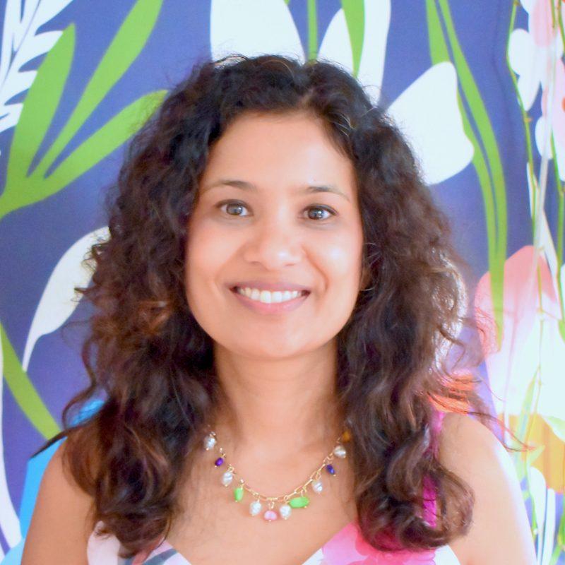

<section class="container" style="max-width: 900px; margin: 0 auto; padding: 2rem 1rem">
<div class="card" style="
            border: 1px solid rgba(26, 77, 180, 0.12);
            border-radius: 14px;
            padding: 1.5rem;
            box-shadow: 0 6px 18px rgba(26, 77, 180, 0.06);
          ">
<div class="prose" style="line-height: 1.65">
<div class="about-layout">
<div class="about-photo">
<picture>
<source sizes="240px" srcset="
                      assets/artist/artist-400.webp   400w,
                      assets/artist/artist-800.webp   800w,
                      assets/artist/artist-1200.webp 1200w,
                      assets/artist/artist-1600.webp 1600w
                    " type="image/webp"/>

</picture>
</div>
<div class="about-text">
<h2>Hi, I'm Bhavya</h2>
<p class="about-intro">
                  The ceramic artist behind Kiln Kissed Ceramics, based in
                  Sunnyvale, CA. I create small-batch, handmade pottery that
                  blends function with beauty. My work is rooted in a love of
                  vibrant glazes, rich textures, and organic details that give
                  each piece its own unique character.
                </p>
<p>
                  My pieces begin with a slab of soft clay. I press everyday
                  materials, like lace, leaves, bubble wrap, carved wooden
                  blocks, or embroidered fabrics into the clay’s surface,
                  creating texture and pattern. From there, each slab is cut and
                  hand-molded into a range of functional forms. My process is
                  intentionally slow and intuitive, guided by play, design, and
                  experimentation. This hands-on approach ensures every piece
                  develops its own distinct personality, with natural variations
                  that make it truly one of a kind.
                </p>
</div>
</div>
</div>
</div>
</section>
